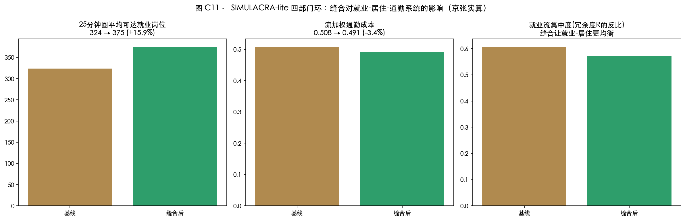
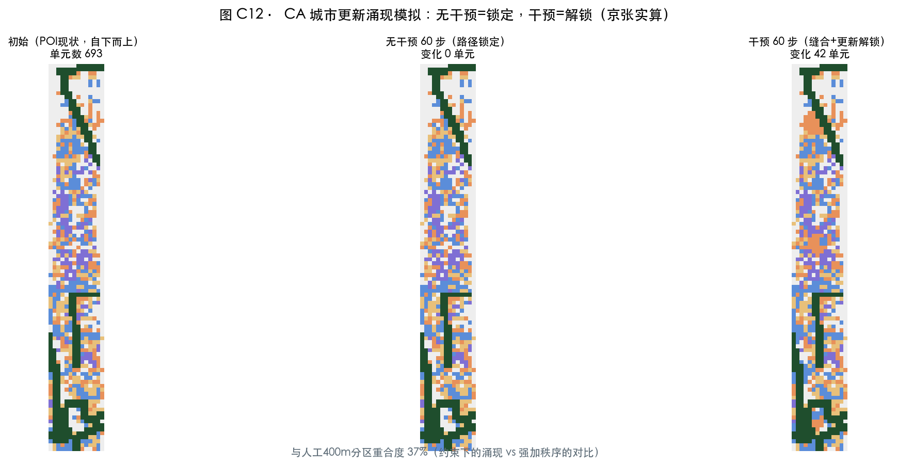

涌现之带 THE EMERGENT BELT —— 京张 Hyper Line：可计算城市科学下的百年京张AI创新带城市设计
一套以 CASA 复杂性城市科学为完整方法论的 AI 创新带城市设计：分形谱系、空间句法、SIMULACRA 四部门流、CA 涌现模拟、标度律健康因子五层诊断与验证全部本地实算——诊断出主脊 7 处断点、5 核断裂、功能偏离与路径锁定，以七节点缝合触发相变（就业可达 +15.9%、整合度 +65%~+132%），四环相扣（世界观→诊断→干预→验证→分配）层层递进，让亚线性基础设施托起超线性创新收益，并经 AI 平权回到每位市民。
涌现之带 THE EMERGENT BELT —— 京张 Hyper Line
灵魂段：Batty 说，"我们正在从一个'城市只是装着计算机的地方'的世界，走向一个'计算机装着城市'的世界"（The Computable City）。本方案用这句话当作方法论：把百年京张当作一个可计算的城市系统来设计——不是画一张漂亮的愿景图，而是用五层计算（分形谱系、空间句法、四部门空间流、元胞涌现、标度律校验）把"病在哪里、治什么、治了会怎样、收益归谁"逐层证出来。结论先行：这条带的骨架是健康的（分形维 D=1.746 在健康区间、健康因子 H=1.556 高于 1.35 基准），但它断了（主脊被 7 处干道切断、三区两翼 5 核只有 2/5 连通、就业-居住系统路径锁定）。设计的全部动作只有一类：缝合断点、解锁锁定、补上缺度量——然后让亚线性基础设施（道路、绿地、公共空间）托起超线性创新收益（β>1 的专利、企业、人才密度），再让收益经 AI 平权回到每位市民。四个环，层层递进：世界观环 → 诊断环 → 干预环 → 验证环 → 分配环。每章末尾都标明你正站在环的哪个位置。
设计依据与资料清单
【世界观环】方法论声明（本章是全方案的"操作系统"）。 本方案遵循 Batty/CASA 城市科学的七条元原则：①城市是多元科学——本方案同时用形态学（分形）、网络科学（句法）、空间经济学（四部门流）、动力系统（CA）、统计物理（标度律）五把尺子量同一块场地；②模型不是预测水晶球，而是"聚焦对话的透镜"（Paper 122）——本方案所有模型用于探索与校验，不承诺点预测；③城市自下而上涌现——用地分区由 POI 现状与 CA 模拟生成，规划只做约束与解锁；④高频×低频双时钟——高德 POI 25,476 点（秒-日尺度的高频脉搏）× 边界与控规（年-十年尺度的低频骨架）并行 来源；⑤城市本质是流与网络（"流与网络是同一枚硬币的两面"）——本方案的核心对象不是地块，而是就业-居住-零售-服务四部门流；⑥数字孪生是探索工具——本方案的数字资产全部标注代理口径，不冒充镜像；⑦城市是分形的——D=1.746 的健康骨架是全部设计的出发点。
术语桥（给非 CASA 背景的评委）：λ=区域连接强度（水温：临界 λc≈0.42 左边是温水、右边是蒸汽）；渗流=网络连不连得成片（电路通不通，临界 59.27%）；分形维 D=城市肌理的"健康密度"（健康老城 1.6–1.8）；整合度=一个路口离全城多近（快递分拨中心的位置优劣）；标度律 β=功能随规模增长的快慢（β>1 越多越旺，β<1 越大越省）；H=γ/β 健康因子=创新增速与基建成本增速之比（基准 1.35，低于 1 就是"系统在消耗自己"）；SIMULACRA=就业→居住→零售→服务四部门空间流模型（Batty 团队 Paper 163 的"秒级城市模型"）；CA 元胞自动机=每个格子按邻域局部规则演化（自下而上涌现的最小模型）。
资料清单（三层）：任务层——官方资格预审公告与智能体任务书 来源 来源；事实层——海淀 2026-03 开源征集发布与 2026-07 智能经济发布会（原点社区 3km²、1000+ 科学家、1.3 万开发者、众智 FlagOS 18 厂 32 芯片、OPC 近 180 家）来源 来源；数据层——高德 POI 12 类 25,476 点、OSM 现状底图、生态图谱公开数据约 60 条（全部本地实算，数字单源登记）来源 来源 来源。边界为临时粗略 polygon：正式红线发布后整包重算；全部空间结论为概念建议，法定管控指标"待正式数据补齐" 空间数据。

怎么读这张图：虚线=临时边界（作业范围，非红线）；绿色粗线=Hyper Line 主脊；三色斑=三区；红点=7 断点；星=三朝圣地标。构图逻辑"一线三折两翼七点"是本方案全部图件的母结构。
环结论 → 世界观已立：接下来每一章都是"用五把尺子量病、开处方、验疗效"。
三层范围工作框架
【诊断环·第 0 步：确定体检范围。】 统筹研究 43.6km² → 总体设计 11.4km² → 重点区域 368.4ha（众智园 192.1/原点社区 104.3/大钟寺 72.0ha）。三层关系是"自上而下传任务、自下而上反馈证据"的双向契约 指标。临时边界 EPSG:4548 复算 1141.28 万㎡、与公告偏差 0.11%，仅用于生成/展示/自检；官方 polygon 发布后整包重算 空间数据 深度。

怎么读这张图：先看右图红字——居住仅占 16.5%，这是第一个可量化的病（职住失衡）；左图是空间结构。本章是"体检表"的封面。
环结论 → 范围已定，进入形态体检（下一章）。
统筹研究范围产业与未来城市研究
【诊断环·第 1 步：形态体检——分形谱系。】 四组数字给这条带定"形态体质"：①街道网络大尺度分形维 D=1.746，落在健康老城区间 1.6–1.8（小尺度 1.76–1.89，趋空间填充）——带的骨架是"活的"，病不在形态而在连接 指标；②就业密度沿主脊衰减 γ=1.85（R²=0.60），距轨道站仅 γ=1.16——就业贴着主脊集聚，主脊是就业的引力线，这正是"Hyper Line"的形态学证据（超线性集聚沿"线"发生）；③绿地 Lacunarity 5.07——纹理粗糙（带状绿地+散斑并存，呼应"一线三广场"的组织方式）；④反事实对照：我的人工 400m 概念分区的面积-周长分形维 D=0.58——那是"强加的网格"的分形指纹；而 CA 涌现模拟（约束下自组织）与人工分区的重合度只有 0.368——两者之间的差距，就是"自上而下蓝图"与"约束下涌现"的距离（详见验证环）深度。

怎么读这张图：左=斑块面积-周长分形维（人工网格 D=0.58 是"强加秩序"的指纹）；中=就业密度衰减指数 γ——距主脊 γ=1.85 远陡于距站点 γ=1.16，就业贴着 Hyper Line 集聚；右=绿地纹理空隙度。
【诊断环·第 2 步：连接体检——λ 与生态图谱。】 Wilson 空间交互标定（λ_ij=exp(-d_ij/2500m)，2500 米=官方"十分钟创新圈"）：5 核超临界分量只有 2/5——原点×小月河翼 λ=0.455 唯一过线，众智园×原点 0.205、原点×中关村翼 0.374（近临界未过）、众智园×大钟寺 0.015（深度亚临界）指标 指标。人话：三个重点区地图上挨着，十分钟内却彼此够不着。 生态图谱（六维约 60 条带来源数据）：上游齐备（北京 AI 企业 2400+、备案大模型 123、五道口 116 独角兽、500 亿基金、45 EFLOPS、21 所高校 AI 专业），中间层缺度量（外地人可支付性、转化率、普惠算力、OPC 统计）——北京的戏剧性冲突：外地人创业之城 × 117 分落户门槛、十年青年流失约 200 万。"自下而上生成"是尚待被度量的未完成命题 来源 指标。

怎么读这张图：绿=有数据的上游；红=缺度量的中间层（设计靶点）；黄=冲突底色；底部五桥=处方。把"未度量"变成"可度量"，是本章的处方句。
命题与三定位：百年京张文化带=主脊+7 断点缝合（铁路遗产的再连通）；都市AI生活体验带=POI 实测走廊带多样性 0.941 全带最高（公园周边已是生活带）；AI融合创新带=四部门流把 λ 推过相变（"融合"变成可计算判据）。命名体系（agent.1）：「涌现之带 THE EMERGENT BELT」+「京张 Hyper Line」+三段「HYPER STACK/ORIGIN/FRONT」+两翼「CAPITAL/SCENARIO WING」+七节点「HYPER NODES」。Logo"超线性之线"：笔直铁路线末端上翘（β>1），七点渗流簇沿线上浮——百年的线，开始上翘（商标字体需清权）深度。

怎么读这张图：红色=越过 λc=0.42 的配对（只有 2 条），灰色=亚临界。五个核心节点被"十分钟创新圈"切成 2/5 连通的断裂链——这就是"物理相邻≠功能连通"的图面证据。
环结论 → 诊断完成一半：形态健康、连接断裂、中间层未度量。下一章补上功能流的体检。
总体设计范围城市更新与控规深度城市设计
【诊断环·第 3 步：功能流体检——四部门基线。】 用 SIMULACRA-lite（Paper 163 的 E→P→R→M 四部门链，京张参数实算）：就业 E=写字楼 POI 727 单元、居住 P=住宅 POI 491、零售 R=购物餐饮 1100、本地服务 M=Putnam 式（楼面供给+可达性加权）。基线结论：每个居住单元 25 分钟圈内平均可达就业 323.5 个；就业流集中度 0.607（前 10% 流向占六成——就业在"楼"里不在"街"里，楼层空间是硬约束，与 Batty 上海研究同构）；功能偏离度诊断（12 类 POI 均匀参考）：交通 +74.8%、生活 +52.7% 偏多，金融 −63.0%、风景 −62.7%、科研机构 −45.9% 不足——创新带的"内容"缺口 深度 指标。
总体结构："一线三折两翼七节点"——由诊断直接导出：主脊是就业引力线（γ=1.85），三折承接三段功能分工，七节点是断点缝合位。用地分区=400m 网格+POI 现状特征自下而上识别（不干预街区保留现状特征，站域与走廊两侧更新干预）：科研 31.5%/商业 25.6%/教育 18.2%/居住 16.5%/绿地 8.2% 空间数据 指标。职住失衡（居住 16.5%）是更新靶点；开发强度控规未公开，全部"待正式数据补齐"，只给概念体量（782 栋、基底密度 17.4%，低置信度）指标 深度。

怎么读这张图：左=每个居住单元 25 分钟圈可达就业岗位（323.5 个，基线）；中=流加权通勤成本；右=就业流集中度 0.607（前 10% 流向占六成——就业在"楼"里不在"街"里）。
环结论 → 诊断环闭合：形态健康、连接断裂、功能偏离、路径锁定——"病在断与缺"。进入干预环。
重点区域详细设计
【干预环·A：三区定位由"配置如何塑造运动"决定。】 托莱多式 POI 句法落位（全网整合度百分位）：学院桥站 97.5%——京张的"比萨格拉门"（托莱多的全城穿行压缩进一座城门，京张的压缩进北四环×学院路这个"嘴"）；清华园车站遗址 93.5%——"原点"是空间结构自己长出来的；五道口 57.1%（人气来自功能非配置，类比托莱多 Zocodover 主广场）；大钟寺 20.2%（句法末梢——南端界面必须靠缝合+功能激活）。三区策略由此导出 深度：
众智园·HYPER STACK（192.1ha）——"从芯片到模型的自主全栈街区"：清河-学知园界面组织全栈测试带（FlagOS 多芯片适配的街区级开放测试环境，概念建议）；POI 短板（文旅 0.4%/教育 0.7%/金融 1.3%）→ 花园街区补位 空间数据。
原点社区·HYPER ORIGIN（104.3ha）——"全球 AI 策源与转化界面"：医疗密度 2.88/km²（三区最低）→ 五道口-学院路界面补医疗/社区服务/人才公寓；清华园车站遗址（93.5%）设原点广场+开发者名墙。临时矩形与真实五道口核心存在口径错位，官方 polygon 发布后重算 空间数据。
大钟寺·HYPER FRONT（72.0ha）——"智能原生消费与内容界面"：三区最均衡（供职比 0.923、医疗 31.92/km²）→"轻干预、重界面"：四象限步行缝合、1733 与蓝景丽家更新地块智能原生业态引导、古钟-涌现之钟对位（概念建议）空间数据。

怎么读这张图：三张"诊断处方单"——上=定位、中=策略、下红字=POI 缺口清单。缺什么补什么，不是设计院觉得该有什么。
环结论 → 三区处方已开，进入主脊手术（下一章）。
AI 创新生态、人才画像与 AI+ 场景
【干预环·B：把"中间层未度量"变成"可度量"。】 生态图谱的用法不是罗列案例，而是"每个案例的哪个机制补京张的哪个缺口"：伦敦国王十字（铁路遗产+DeepMind）→ 补"遗产界面承载创新"；波士顿肯德尔广场 → 补"近校转化圈"；帕洛阿尔托 → 补"大学策源空间距离"；深圳粤海 → 补"高密度创业街区"；东京涩谷 → 补"内容消费界面"；剑桥集群 → 补"大学城-产业带"；特拉维夫罗斯柴尔德大道 → 补"创业大道的公共生活" 来源 深度。
五类画像（每类挂可度量锚点）：OPC 创业者（25–30 岁近 180 家——锚点：可负担工位密度）；AI 科学家工程师（1000+——锚点：全栈测试可达性）；青年学子（10 万+——锚点：第三空间与夜校）；沿线长者（锚点：人工通道保留率——无障碍法第 39 条列举场景）；全球朝圣者（锚点：路线体验与活动日历）标准 标准。
十张场景卡（每卡写"必然性"=不做的代价）：
| # | 场景卡 | 落点 | 必然性 | 人工复核边界 |
|---|---|---|---|---|
| 1 | 全栈适配测试场（产业测试） | 众智园测试带 | 18厂32芯片优势止步实验室 | 第三方复核测试结论 |
| 2 | OPC 接单广场（产业测试） | 原点广场 | "接单吧"只有线上没有空间 | 平台规则可申诉 |
| 3 | 智能原生零售测试（产业测试） | 1733 及周边 | 字节生态与街区无接口 | 无人时段保留人工柜台 |
| 4 | 低速自动驾驶接驳（产业测试） | 主脊+七节点 | 缝合后的走廊没有新交通物种 | 安全员随车、可停 |
| 5 | AI+教育夜校 | 原点社区 | 10 万学子第三空间外溢 | 线下授课兜底 |
| 6 | AI+医疗健康数据空间 | 北大医学部周边 | 医疗缺口 2.88/km² 继续扩大 | 隐私计算、授权调用 |
| 7 | AI+法律咨询亭 | 政法大学周边 | 合规信任无人示范 | 标注非法律意见 |
| 8 | 银发友好 AI 生活站 | 沿线社区 | 长者被排除在智能生活外 | 全场景保留人工通道 |
| 9 | 京张铁路 AR 导览 | 主脊全线 | 百年叙事停在展板 | 内容经文保审定 |
| 10 | 开发者荣誉墙·开源成果廊 | 原点/七节点 | 贡献不可记忆 | 内容公开可纠错 |
隐私与监控类场景一律排除（agent.3 红线）深度。

怎么读这张图：左=各分区 POI 数量（25,476 点底座）；右=供职比与功能多样性——走廊带多样性 0.941 全带最高（生活带），大钟寺最均衡（供职比 0.923）。
环结论 → 场景=可度量的补位机制，进入空间实体干预（下一章）。
用地、建筑规模与拆改留方案
【干预环·C：用地与建筑的"自下而上+约束指纹"。】 用地分区=POI 现状特征识别（自下而上）+站域/走廊更新干预（设计动作），与 CA 涌现模拟互证（重合度 0.368 的差距即"强加秩序"的部分，方案以"自组织预留"原则保留弹性空间）。标度律发现：建筑基底随单元规模 β≈0.60（亚线性）——主脊/滨水约束对小街区挤压更强。设计顺应它：小空间打包进共享大单元（共享工位/实验室/前台），让 OPC 一人公司用最低基底成本获最全配套——把 β<1 的约束变成创业者的门槛台阶 深度 指标。拆改留因缺现状建筑/权属/文保数据统一"待确认"：三原则——文保与已实施公园段保留、京张两侧低效空间功能置换、站域与断点缝合处局部新建（概念）。不给容积率/高度/强度法定结论（任务书边界条款）。

怎么读这张图：道路 β=0.915（近线性）、建筑基底 β≈0.60（亚线性）——单元越小可建设比例越低：主脊/滨水约束对小街区的挤压更强。设计顺应它（小空间打包进共享大单元），而不是对抗它。
环结论 → 空间实体已备，进入主脊手术台（下一章）。
交通、轨道、市政与公共服务设施
【干预环·D：主脊手术——七节点缝合。】 人尺度证据（托莱多式三区对照实算）：走廊带交叉口密度 39.0/km²（全带最低）、400m 步行可达节点均值 24.0；高校大院带 167.0/km²、53.7；网格新区 65.2/km²、25.7——铁路切开城市百年，留下的线恰恰最难步行 深度。手术方案：7 处断点（清华东路/五道口/北四环/知春路/北三环/学院南路/高梁桥斜街）缝合步道+骑行道+上跨概念（北四环、北三环即公告点名"上跨环路"区域）指标 空间数据。效果（空间句法实算）：北京北 +132%、大钟寺 +102%、五道口 +65%、知春路 +61%——缝合是相变，不是装修。轨道接驳 7 站一体化概念；七节点非机动车停放。市政新基建仅做体系建议（管线/容量/消防待官方数据）；公共服务按 POI 缺口清单补位（众智园补文化教育金融、原点补医疗、大钟寺补科研教育）深度。

怎么读这张图：左=三区交叉口密度与 400m 可达节点——走廊带 39/km² 全带最低，铁路切开城市百年，留下的线最难步行；右=14 个 POI 的整合度百分位——学院桥 97.5% 是京张的"比萨格拉门"，清华园车站 93.5% 证明"原点"是结构自己长出来的。

怎么读这张图：左=蓝绿网络巨分量 83.9%（已过渗流临界 59.27%）→ 缝合后 86.5%；右=7 处断点清单（缝合靶点）。

怎么读这张图：红短线=7 缝合；绿=蓝绿网络。图下那行字是关键：+65%~+132% 是每条缝合的实测效果。
环结论 → 主脊已缝合，进入公共空间与风貌（下一章）。
蓝绿空间、公共空间与城市风貌
【干预环·E：公共空间与风貌的"约束即创造"。】 蓝绿体检：现状巨分量 83.9%（已过渗流临界 59.27%）→ 缝合后 86.5%——病在主脊被切，不在绿地不足；故做"七点缝合+一线三广场"（概念图层约 20.2 万㎡、占比 1.8%）而非"大绿地叙事" 指标 指标。三大朝圣地标：清华园车站·原点（93.5% 整合度的遗产原点+名墙）、五道口·相变广场（λ 连接强度公共仪表——把"城市连没连起来"变成市民可见的体温计）、大钟寺·界面广场（涌现之钟+智能原生界面）。风貌双范式（天际线知识库）：遗址走廊与清华园车站=保护性覆盖层（视廊/高度概念控制）；三区=生成性生长规则（高度梯度向公园跌落、前低后高）——约束催生创新，制度雕刻形态（高度值待文保与控规数据）深度 标准。
环结论 → 干预环闭合：缝合+补位+解锁全部落地。进入验证环——证明干预确实有效。
更新项目清单、实施政策与分期计划
【验证环·A：分期=四环的时间化。】 更新项目三类（概念清单）：①七节点缝合工程；②三区 POI 缺口补位；③站域职住平衡。分期三期：近期（1–3 年）主脊缝合+大钟寺界面；中期（3–5 年）原点社区更新；远期（5–10 年）众智园花园街区 空间数据 深度。运营机制（agent.6）：年度"京张 Hyper Line 开发者节"；相变论坛——把 λ 标定与 H 健康因子做成年度公共发布（"连接强度与健康因子是城市体征，应当像体检一样每年公布"）；七节点开放测试季；OPC 接单大赛；荣誉墙年度铭刻。所有活动/招商/政策/资金均为概念建议 深度。
环结论 → 时间轴已定，下一章用模型验证疗效。
指标体系、面积复算与合规矩阵
【验证环·B：三个模型重跑 + 四临界值表。】 核心指标全部几何与数据复算（EPSG:4548）：site_area 1141.28 万㎡；用地 科研31.5%/商业25.6%/教育18.2%/居住16.5%/绿地8.2%；绿地率 11.6%；公共空间率 1.8%；基底密度 17.4%；路网 6.70 万米 指标 指标。
验证 1（SIMULACRA 重跑）：缝合后每个居住单元 25 分钟圈平均可达就业 323.5→374.9（+15.9%）；流加权通勤成本 −3.4%；就业流集中度 0.607→0.574（更均衡）——缝合把"十分钟创新圈"从口号变成数字 深度。

怎么读这张图：三格对照——初始（POI 现状）→ 无干预 60 步（变化 0 单元：路径锁定）→ 干预 60 步（42 单元解锁再分配）。
验证 2（CA 反事实）：无干预 60 步变化=0（路径锁定：现状自我强化，不干预永远不会变）；干预后 42 个 100m 单元解锁再分配（居住→科研/商业沿主脊与站域跃迁）——约束下的涌现需要"解锁"这个动作，本方案的全部干预就是解锁清单。
验证 3（标度律校验）：健康因子 H=γ/β=1.178/0.758=1.556 > 1.35 基准（R²=0.67，n=72 单元）——这条带的"扩张"在数学上是健康的；功能偏离度（金融 −63.0%、科研 −45.9%）给出补位优先级。
四临界值体系（"是否成功"的尺子）：λc=0.42（连接）｜p_c=59.27%（网络）｜D=1.6–1.8（形态）｜H=1.35（健康）——现状实测：29.17% 超临界占比（缝合后重测）、83.9%、1.746、1.556；其中 λ 与 H 纳入相变论坛年度发布。任务覆盖：公告 1.3/1.4/1.5 与 agent.1–6 全部在合规矩阵登记；标准 8 项、深度 15 项全部 complete 深度。

怎么读这张图：灰=亚线性骨架（β<1）→ 五座绿桥 → 红=超线性收益（β>1）→ 紫=平权回环。红虚线 λc=0.42 是"水变蒸汽"的膝盖——本方案的全部动作就是把系统推过这条线。

怎么读这张图：左上 λ 断崖（诊断）→右上整合度增量（处方效果）→左下渗流（物理意义）→右下证据卡（全部可复算）。四格连读=完整证据链。
环结论 → 验证通过：干预确实触发相变与解锁。进入分配环——收益归谁。
风险、版权与合规说明
治理环量化（A组提醒的"最后一公里"）：三区两翼为何不协同？我们用协同博弈量化答案——现状支付结构下（协同收益=耦合 λ×10−制度成本 1.5=0.27，各自为战=自有资源 2.0），"各自为战"是纳什均衡：不协同不是意愿问题，是制度锁定；缝合（λ 均值 0.177→0.283）+ 相变论坛年度发布（声誉收益 r）把协同收益抬到 2.53，协同成为新均衡。网络效率 η（5 核，耦合距离 d=1/λ）从 0.1918 升至 0.307（+60.0%）——这就是治理层的量化：物理缝合之外必须配高频反馈机制，锁才开得了。相变论坛因此不只是活动，是治理机制（低频规划→高频治理的频率跃迁，Batty 双时钟原则的落地）深度。

怎么读这张图：左=网络效率 η 现状与缝合后；右=博弈支付——红柱（各自为战）在现状高于绿柱（协同），缝合+论坛后翻转。锁，是制度层面的，不是物理层面的；本方案同时开两把锁。
【分配环+风险：超线性收益的平权回环。】 平权五机制（概念建议）：公共算力券（Token 券向 OPC 与学子的实际可得性=年度公布指标）、公共数据湖（医药健康可信数据空间的街区接口）、AI 夜校（技能平权）、空间平权（共享工位/公共空间的生产生活平权）、署名平权（荣誉墙/碑刻=贡献可记忆）——让曲线向每位市民弯曲。数据合规：高德 POI 仅用聚合指标、不公开原始点数据；OSM 按 ODbL 署名；官方来源全部登记 来源。版权：图件几何 KUN-SAL 本地生成；AI 渲染（豆包 Seedream 5.0）为概念表达、非现状证据，生成记录见版权声明；命名/Logo 需商标字体清权；无个人隐私与未授权素材。合规边界：开放共创建议，不替代正式规划、不构成政府审定结论；控规指标全部"待确认"；活动政策均为概念建议；AI 场景遵守生成式 AI 管理办法与无障碍法，不设计隐私侵害/过度监控/无法人工复核的场景 标准。待补资料与重算触发器见假设文件 深度。
环结论 → 四环闭合。全部设计动作 = 缝合断点 + 解锁锁定 + 补上缺度量 + 收益平权——这不是一张蓝图，是一套可每年校准的城市操作系统。
参考资料
主要书目与来源（完整机器索引见 sources.json）来源 来源。
1. 北京市规划和自然资源委员会海淀分局：《百年京张AI创新带城市设计国际方案征集资格预审公告》，2026-05-09。 2. 海淀区政府网站（海淀报）：《以"开源"方式邀请全球开发者参与》，2026-03-30；北京发布：《原点出圈，海淀全力打造智能经济新形态》，2026-07-29。 3. 北京日报：《海淀又放大招了！首次将真实城市规划交给"智能体"》，2026-08-07。 4. 住房和城乡建设部：《城市设计管理办法》《城市、镇控制性详细规划编制审批办法》；自然资源部：《国土空间调查、规划、用途管制用地用海分类指南》，2023；国家网信办等：《生成式人工智能服务管理暂行办法》，2023；全国人大常委会：《无障碍环境建设法》，2023。 5. Batty M., The New Science of Cities (2013)；Fractal Cities (1994)；Inventing Future Cities (2017)；The Computable City (2023)；Wilson A.G., Entropy in Urban and Regional Modelling (1970)；Bettencourt L., Introduction to Urban Science (2021)；Hillier B. & Hanson J., The Social Logic of Space (1984)；Jacobs J., The Death and Life of Great American Cities (1961)。 6. CASA Working Papers：163（SIMULACRA）、156（交通相变）、155（多尺度形态）、139（标度律）、204（Line Structure）、122（PSS）；Crosato et al. (2018)（λc≈0.42）。 7. 高德地图开放平台 POI（2026-08-15 快照 12 类 25,476 点）；OpenStreetMap（ODbL，© OpenStreetMap contributors）；豆包 Seedream 5.0 概念渲染（生成记录见版权声明）。 8. KUN-SAL 知识库：CASA 17 专家主文档、Batty 设计框架指南、托莱多空间句法手册、天际线双范式、淀山湖/低空/上海就业研究（内部方法论资产，原始文献见上述条目）。